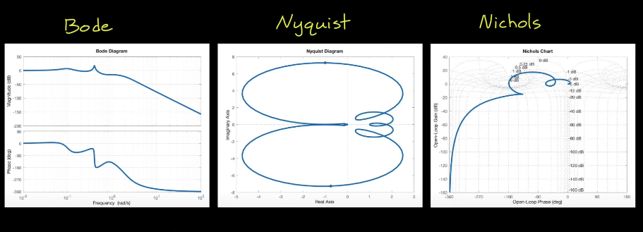
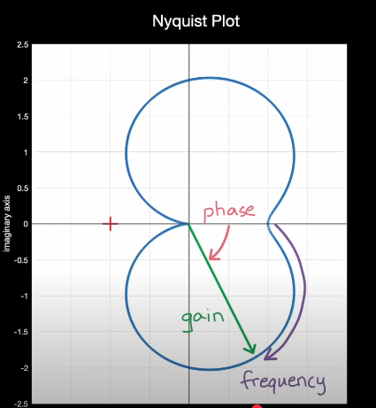
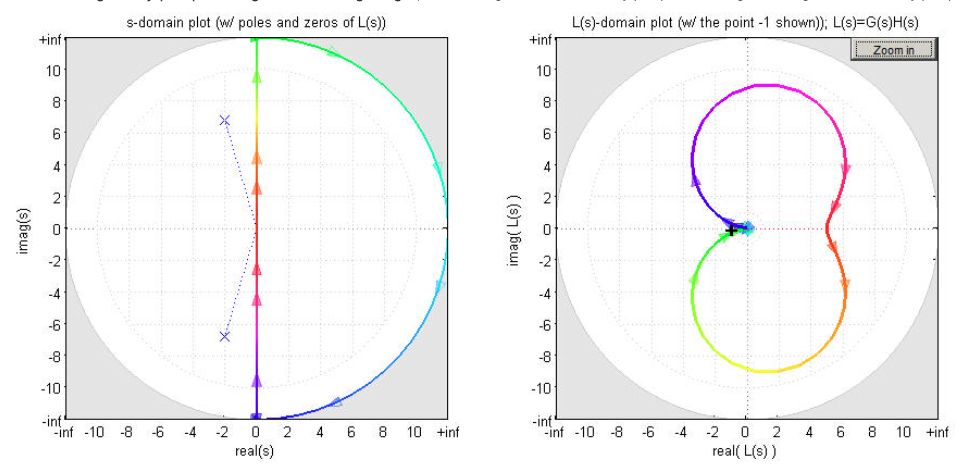

All three plots display 3 Key information about the system: 1. Gain 2. Phase 3. Frequency
All three display the same information just in different ways Bode Plot is useful for Loop shaping. Nyquist Plot and Nichols Plot are useful for general sensitivity and stability analysis.
Bode plot is extremely useful when analyzing open loop frequency reponse \(G(s)\) of minimum phase and stable systems to predict the beahvior of the closed loop system \(\frac{G(s)}{1+G(s)}\). However, Bode plot falls apart when dealing with non-minimum phase or unstable systems. This is where Nyquist plot comes in useful. Nyquist plot displays all three in one plot (Gain, Phase, Frequency). Nichols encodes Bode magnitude and phase plots into one single plot, displaying same information as the Nyquist plot in cartesian coordinates.

Avoid (-1,0) on Nyquist plot if the system is open-loop stable. Closed-loop system oscillates at that point (marginally stable).
Nyquist plot is the plot in the W-plane resulting from a transfer function mapping the Nyquist contour on the S-plane to a plot on the W plane.
In the S-plane, for proper and strictly proper transfer functions all RHP infinite points (not on the imaginary axis) are mapped to a single point in W-plane since in W-plane
\[\text{Phasor Magnitude} \propto \frac{\Pi \text{magnitude of zero phasors in s}}{\Pi \text{magnitude of pole phasors in s}}\]
Step 1: Substituting \(s=j \omega\) into the give transfer function.
Step 2: Sweep \(\omega\) from 0 to \(\infty\).
Step 3: Draw its reflection about the real axis in W-plane for negative frequencies (in S-plane).
We can use 4 points to approximate this.
To get the intercepts in 3 and 4, follow these steps:
A fighter jet open loop system has one slightly positve real pole which makes the system slightly unstable (by design). Bode plot doesn’t work on this scenario, but Nyquist plot can help. Count the number of CW encirclements of -1!
 Frequency is not explicitly shown just as Nyquist plot
Frequency is not explicitly shown just as Nyquist plot
Given a blackbox LTI system, feeding in signals of various frequency (Sine sweep) and observing the output can generate the bode plot of the transfer function.
Fundamental Principle: Open loop system can provide insightful information about the close loop system. Let open loop system = G(s) = L(s) = P(s) * K(s), closed loop system = \(\frac{G(s)}{1+G(s)}\)
Applications of Bode plot
Key Observation Bode-plot restatements of Nyquist Criterion (margins)
Let \(\omega_{gc}\) be a gain-crossover frequency where \(|G(j\omega_{gc})|=1\) , and let \(\omega_{pc}\) be a phase-crossover frequency where \(\angle G(j\omega_{pc})=-180^\circ\).
Phase margin condition (at gain crossover): \(|G(j\omega_{gc})|=1 \quad \Rightarrow \quad \angle G(j\omega_{gc}) > -180^\circ\) (positive phase margin). This ensures the Nyquist plot does not cross the real axis at or left of \(-1\).
Gain margin condition (at phase crossover): \(\angle G(j\omega_{pc})=-180^\circ \quad \Rightarrow \quad |G(j\omega_{pc})| < 1\) (positive gain margin). This keeps the Nyquist locus inside the unit circle when it is at \(-180^\circ\), avoiding the point \(-1\).
If both conditions hold for all relevant crossovers and \(P=0\), the loop has positive stability margins and the closed loop is stable.